- 1 The initial idea (August 2024)
- 2 Manufacturing physical cards (September 2024)
- 3 Starting a Company in the U.S. (October 2024)
- 4 Spreadsheets and Pricing (November 2024)
- 5 Digital Infrastructure (December 2024)
- 6 Marketing and Ads (January 2025)
- 7 Burn-out (March 2025)
- 8 Reaching out for help (October 2025)
- 9 Launching on Kickstarter (January 2026)
- 10 Conclusion
I think this is my first non-Haskell related post on this blog! This time, I want to walk through how I successfully launched Kanjideck on Kickstarter starting from zero, in my spare time.
I want to go over the initial side project, how that turned into a more ambitious idea, manufacturing and testing a physical product, setting up a company, spreadsheets, setting up the digital infrastructure for the business, marketing and ads, burn-out, launching, and reaching out for help as a solo entrepreneur.
1 The initial idea (August 2024)
In the summer of 2024, with nothing to do after having finished reading “Babel” by R. F. Kuang (a book which happened to be about language and etymology and that I thoroughly enjoyed), I decided to get back to learning Japanese.
Japanese is a challenging language to learn (at least in the West). Mostly, that’s due to Kanji, one of the three types of characters used in written Japanese. Hiragana and Katakana are phonetic scripts, where to each symbol corresponds exactly one sound, and there are about 50 of each (these can be learnt in about a week). On the other hand, there are about 2,136 Kanji needed for fluency1. Each Kanji is a (potentially complex) symbol with one or more readings and one or more meanings. Anyway, that means there are a lot of Kanji to memorize.
I’m a big fan of spaced repetition and Anki. If you don’t know about spaced repetition, see “How to Remember Anything Forever-ish”. I had tried to study Kanji seriously in the past, but the resources I was using at the time, despite using them consistently (in Anki), weren’t doing it for me. Perhaps surprisingly, there is a big design space for Kanji learning resources. One particularly annoying aspect of many resources is the use of mnemonics, which appeal to brute-force more so than understanding. To me, they felt distracting and misleading, where a completely made up story about the distinctive features of the character was used rather than appealing to the much more useful etymological origins of the character.
I guess I have a lot to say about why I think etymology-based learning for Kanji is so useful, how it makes understanding Kanji possible (alongside memorising them), and how this understanding makes learning new ones that much easier. However, to stay on track, I’ll just refer those curious to the Kanjideck Guide to read more about its design2.
Resuming Japanese in 2024, I wanted to program my own Anki deck, compiling just the right information for each Kanji card. I knew exactly what information I found valuable, so it was just a matter of finding the right sources and conjuring up the right HTML (Anki cards are rendered using HTML). I had a working prototype within 2 days, and it looked gorgeous3:
| Fig 1. Kanji: Talk | Fig 2. Kanji: Past |
|---|---|
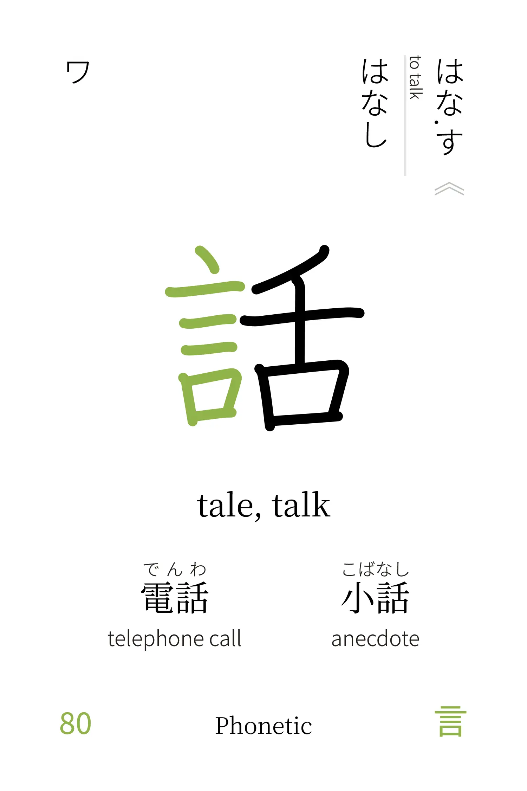 |
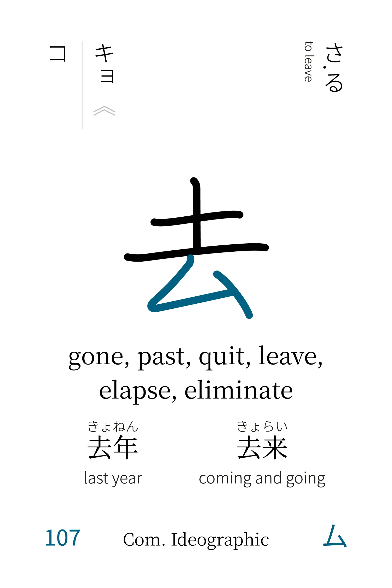 |
It looked so nice, in fact, that I thought “what if”?
1.1 What if ?
The digital Anki deck was working fantastically well and the design turned out beautiful. I wanted to print some cards into the physical realm and experiment studying with a physical resource4. Namely, I wanted to try the Leitner System, a well-known system for physical spaced repetition.
I thought that printing custom cards would require a lot of upfront orders (this turned out to be false, see next section), and started entertaining the idea of making the resource I had created more widely available and start a small business5.
I had heard about Kickstarter in passing – a crowd-funding platform which allows people to raise money in pre-orders, but only charges customers if there are enough pre-orders to kickstart the business.
I then decided I’d run a Kickstarter to sell my Japanese Kanji deck in both physical and digital versions, and gather enough up-front orders to be able to print the decks out at a reasonable price per unit.
I just needed a physical version of Kanjideck first! And a project title: Kanjideck.
2 Manufacturing physical cards (September 2024)
I called a few local printing companies (location: Portugal), when I was first trying to figure out how to print the cards. Without knowing exactly who to call, none of those I contacted were able to do playing cards specifically, and required bulk orders in any case.
Eventually, I stumbled upon MakePlayingCards.com, a printing business specialized in playing cards from whom I could buy a single copy of a custom deck, and easily consult the prices of bulk orders. They do worldwide shipping and fulfillment, mentioning fulfillment for Kickstarter by name.
Based on the digital version of Kanjideck I made for Anki using HTML, I programatically generated a PDF per card with a headless browser through Playwright, and converted each card from PDF to a high-resolution PNG (fit for printing) using ImageMagick.
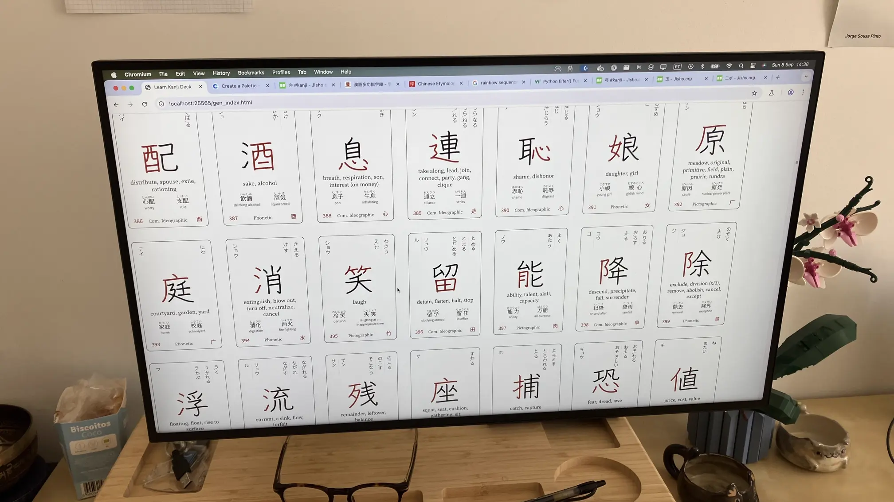
I ordered a test copy of 60 Kanjideck cards using their single-copy custom print feature on September 10th. That was about 15€ at the time.
While waiting for the cards to arrive, I started learning the 3D modeling tool Blender. I had seen many Kickstarter videos which used pretty amazing animations to showcase their product. I was decided to attempt this myself. A few days in I was able to model the cards and render them in some fairly OK scenes:
| Fig 5. Blender render | Fig 6. Blender render |
|---|---|
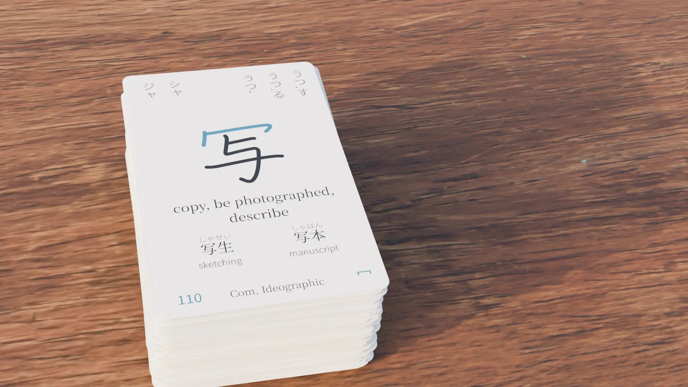 |
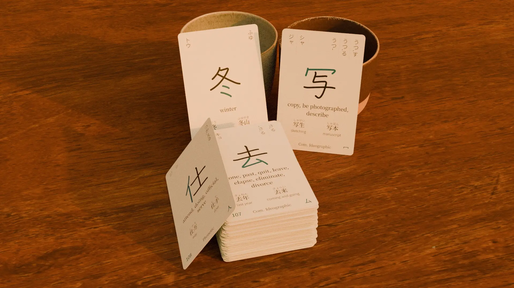 |
I kept improving with time, but eventually realized I was not going to be able to do an animated video which looked good enough to serve as the video showcasing the project on the Kickstarter page.
In the meantime, the cards arrived from the manufacturer. These were the very first prototype:
| Fig 7. First prototype | Fig 8. First prototype6 |
|---|---|
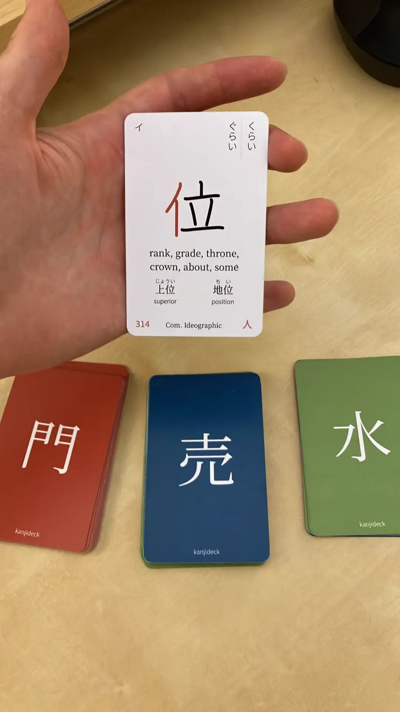 |
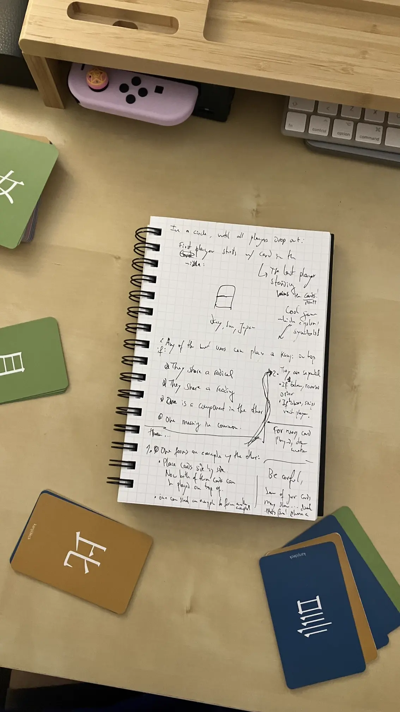 |
I kept daily driving the Anki deck, improving the cards information and layout, and designing the product. Two other important things I tackled at this time were:
Meta cards for the physical deck, including a tutorial, reference cards for Hiragana and Katakana, a reference card for verb and adjective conjugation, and markers for physical spaced repetition (to make a kind of Leitner box using them to separate which cards are in which level)
The box design to package the cards. The Blender skills I had developed ended up being very helpful when designing the deck boxes, as I was able to lay out my design on a 3D model with accurate dimensions and preview it.
The second order, on October 19th, included three copies of the same deck of cards, properly packaged, using various different sizes/textures for the cards and for the boxes. The price for printing each single deck of 90 cards with a rigid box was close to 50€, without shipping. The values are much more reasonable when buying at scale, but for that I need the backing through Kickstarter:
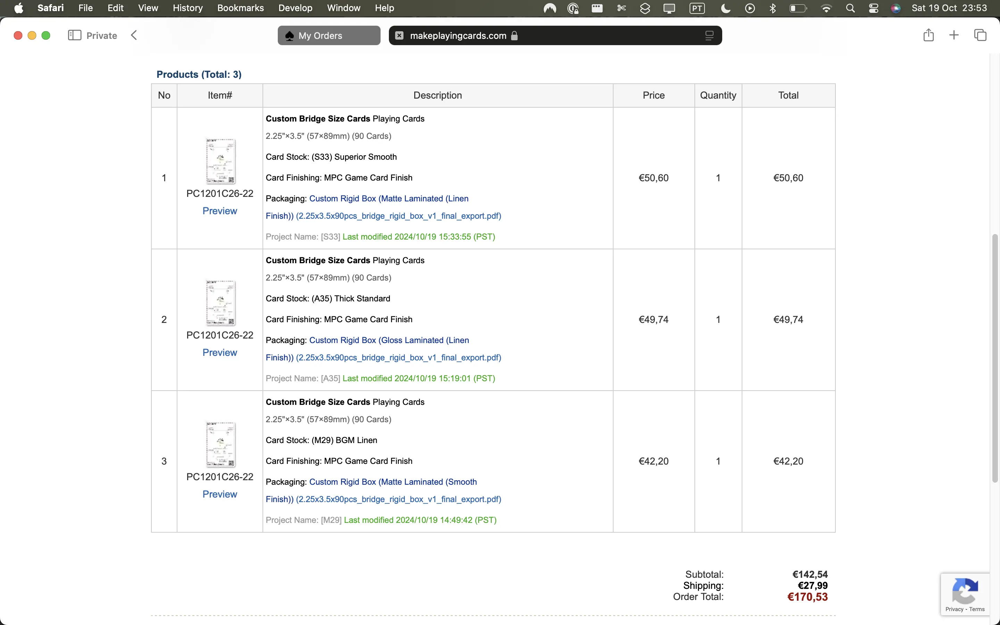
This order proved invaluable to really get a feel for the different types available and choose the best fit for the Japanese-style cards. The linen material came on top for the cards, but not for the box. Here are the three packages when they arrived7:
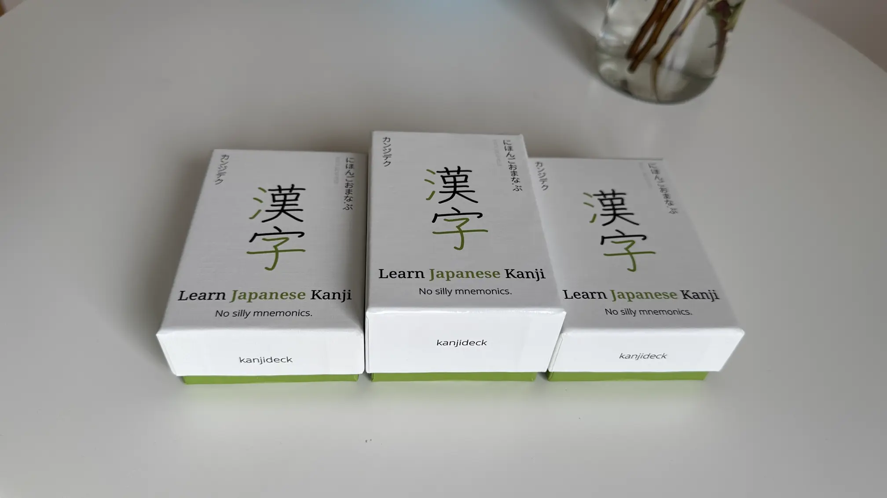
I iterated on the design a few more times, then tested all three physical boxes (for JLPT-5, JLPT-4, and JLPT-3 decks). Originally, I had three decks where each tier contained all cards from all previous tiers. That was a bad idea and at some point I pivoted to having each of the three decks correspond to a single JLPT level.
In the end, the final physical decks look like this:
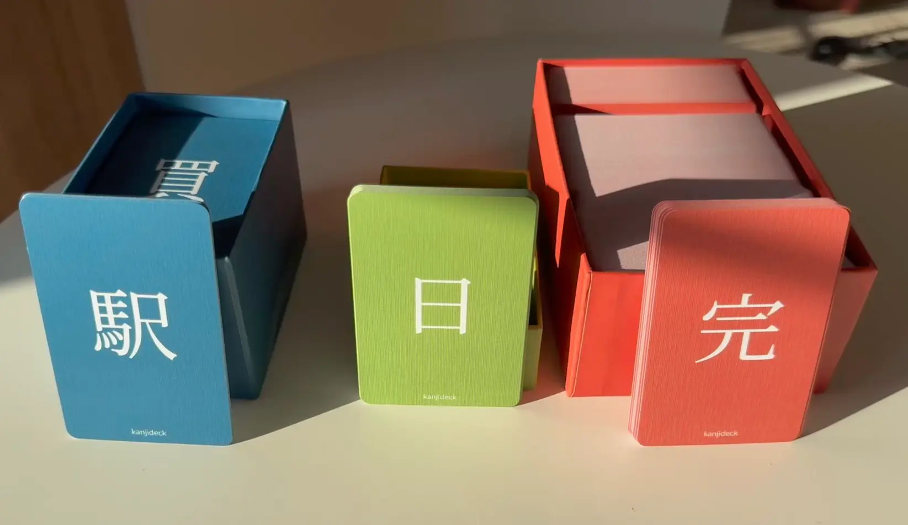
3 Starting a Company in the U.S. (October 2024)
I was dismayed when I found out that Kickstarters can only be run from a few specific countries. Portugal’s not in that list! Kickstarter suggests one could open a business in the United States (a supported country) using Stripe Atlas. That’s what I ended up doing.
The exact details of how to setup a company through Stripe Atlas are now unfortunately forgotten8. I just have to say that it is remarkable how they will handle everything for you and deliver you the business legal documents after a few days. At the time, that cost $300. I also opened a US bank account with Mercury as per Stripe’s recommendation, which went (and has been) fantastically good.
(On a side note, Mercury are famously known in the Haskell circles for, well, using Haskell in production. They are also sponsoring all my work on the new and improved Haskell debugger!).
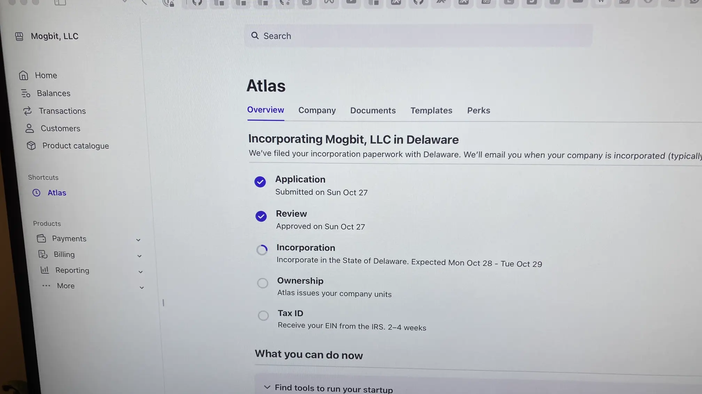
3.1 Accounting and Taxes
Having a company comes with some responsibilities. The kind which you typically delegate, unless of course you’re hell bent on doing everything yourself to keep expenses down. Notably, one has to keep books and eventually report taxes according to them (and they better be correct!).
Luckily, some years prior, I decided to keep my personal finances using a proper ledger with double-entry bookkeeping, accounting accounts, and the standard reports (balance statement, income sheet, cash flow). Mostly, what I studied applies to personal finance just as well as accounting for a simple business, so I knew roughly what to do with the books from the start and picked the rest up as I went.
Perhaps interestingly, I keep my books using Plain Text Accounting (PTA), a discipline of bookkeeping which uses plain text files and CLI-friendly software to read and operate on them. My PTA tool of choice is hledger (a great tool that also happens to be written in Haskell). That said, the transactions and postings formats are quite similar across the existing PTA tools, so the documentation and guides on accounting with a particular tool typically generalise well to PTA tools at large. I recommend Beancount’s “The Double-Entry Counting Method” for those curious about double-entry bookkeeping, Plain Text Accounting, or just both.
Secondly, the books are used to produce reports from which you should have sufficient and correct information to fill in the Tax Reports. Now, I was used to filing taxes in Portugal using the government’s official website form – many fields can come pre-filled in, and the ones you fill in yourself are validated for consistency with one another. I never thought much of it until I had to file taxes for my foreign owned LLC in the United States.
Tax reports in the U.S. are submitted by faxing the forms to a government number. Filing them feels a bit like playing “Keep Talking and Nobody Explodes”, a fantastic game where one player is given a bomb to defuse and the other a manual with (contrived) instructions on how to do so (but can’t see the bomb!)9. In this case, you get to see both the bomb and the instructions, but the difficulty is Nightmare10, and there are hidden bombs, and hidden instructions. Good luck! You should probably pay someone to do it.
4 Spreadsheets and Pricing (November 2024)
How do you price a product? (Really, how? Do recommend some theory if you can).
Moreover, Kickstarter projects have to set a goal for how many dollars the project must raise in pledges for it to be deemed successful. When that goal is achieved, the pledged money is charged to the clients and the “Rewards” (which you can think of like a pre-order) must be fulfilled. If the project doesn’t reach the goal, no money is charged and no Rewards are to be delivered. This is Kickstarter’s all-or-nothing funding model.
With that in mind, my challenge was to:
- Price three different products, considering discounts and bundles;
- With a manufacturing cost dependent on the variable amount of units sold of each type;
- Across the world, with variable VAT/sales tax and shipping per country.
I’m going to skip ahead to the better and refined final iteration of my spreadsheet, which I used to make the final decisions about the price and Kickstarter goal:
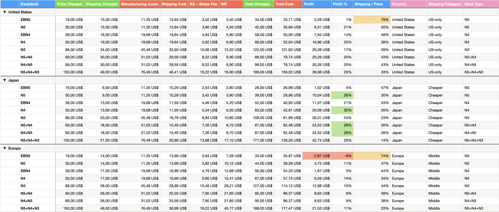
I’m not a spreadsheet expert by any means (though I know how to implement a poor man’s one in a single line of Haskell11), so don’t take this as a necessarily good way of approaching this problem. In fact, if you know how I could’ve done this better I’ll gladly take some pointers.
My strategy was to have one row per deck type, with a different row for the early bird discounted deck (EBN5) vs. the N5 deck vs. the N5+N4 combination. Rows are grouped by regions which have similar VATs (picking a worst-case-ish approximation for the region) and the same shipping. For each deck I table in green the revenue from each sale of one unit (i.e. unit price and shipping charged) and in red the costs of selling that unit (i.e. manufacturing, shipping cost, Kickstarter fee, Stripe fee, and VAT). In blue are key derived metrics per unit (i.e. profit, profit %, and how much shipping I’m charging as a % of the unit price).
Note: In Kickstarter, there is no way to differentiate pricing per region, so some differentiation which takes into account e.g. VAT is made via the shipping charged, which, in contrast, is per country.12
To manage the variable number of orders per deck, I set a baseline: 250 copies of the JLPT-5 deck (90 cards), 250 copies of the JLPT-4 deck (177 cards), and 100 copies of the JLPT-3 deck (390 cards). Those amounts were sufficient to have a positive margin. The Kickstarter funding goal was derived roughly from the price charged for those orders summed. In a separate cell, I had a multiplier which I tweaked to interactively experiment and see what my margins could look like if I sold more than that baseline. FWIW, the numbers in the spreadsheet image are for the baseline exactly.
5 Digital Infrastructure (December 2024)
I got a domain kanjideck.com and, at the start of December, started hosting a handful of services on a simple Hetzner machine. The whole machine is configured from scratch using NixOS and I can build the full machine derivation on my macOS machine and then copy and apply it to the remote machine. Some services I’m now self-hosting for the business:
- Plausible, analytics for the Kanjideck website and this blog
- Listmonk, for managing mailing lists (many recommended having a mailing list of interested people to build good initial momentum when the Kickstarter launches, so I did)
- Grafana, for monitoring the status of my services
- fail2ban, after noticing just how many attempts there were to log into my mail server
- NixOS Mailserver, for self-hosting my own mail server
scrollsent, a small custom service which “wraps” listmonk and receives the mailing-list subscribe requests instead13.
Wait, what?! Are you self-hosting e-mail? Is that not insane?!
TL;DR: Yes.
Originally, despite setting everything up s.t. my e-mails get 10/10 on mail-tester.com, too many e-mails went straight to spam. I kept up at it, and encouraged people on the website to confirm their subscription by checking their spam inbox. I think this improved my mail server’s deliverability, as more e-mails (as far as I could tell) were being delivered after many confirmed subscriptions.
I use it reliably to get e-mail. When sending direct e-mail using my mail client there’s no feedback whatsoever on deliverability (right?), except if they’re answered. Replying to e-mails seems OK.
But, sending promotional e-mails in bulk? I was very wrong to think I had succeeded in setting everything up perfectly and building reputation… it does not matter! See Murphy’s Law section below.
During this time, I also started working on the kanjideck.com website, on the guide to using the cards and on the Kickstarter page.
| Fig 14. Landing page in December | Fig 15. Plausible analytics on website |
|---|---|
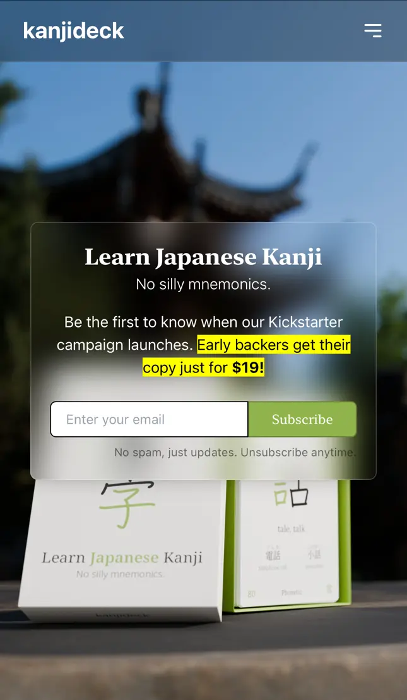 |
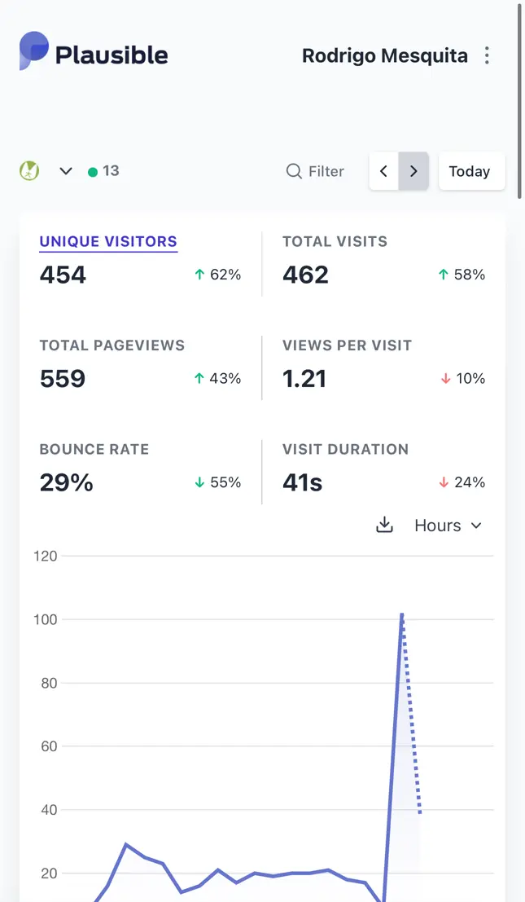 |
6 Marketing and Ads (January 2025)
Marketing is challenging.
I got started with the mindset of a one-man-band who is determined to learn everything that’s necessary. I started an Instagram page to promote the project and started paying for ads shortly after to drive people to my website. The goal was to build a mailing list which would help create momentum on launch day.
Social media management is not for me (more generally, social media isn’t). Creating new content regularly to Feed The Beast wasn’t fun and the effort never really seemed to pay off. I suppose that if you’re able to create engaging content then perhaps the algorithm will reward you (you’re at its mercy!), but posting simple photographs or short videos about a resource for Japanese study never made it past 10 likes naturally.
The alternative is to pay Meta, Google, TikTok, Reddit, etc.
I should devote an entire section to just how awful it is to work with Meta Ads. It is atrociously buggy, and they try to shove AI down your throat at every single turn of the road. It is truly baffling how the Core Product of a trillion-dollar company is this bad. If you suffer through this horrendous experience, you get to watch your hard earned money being drained by Meta for often questionable results14.
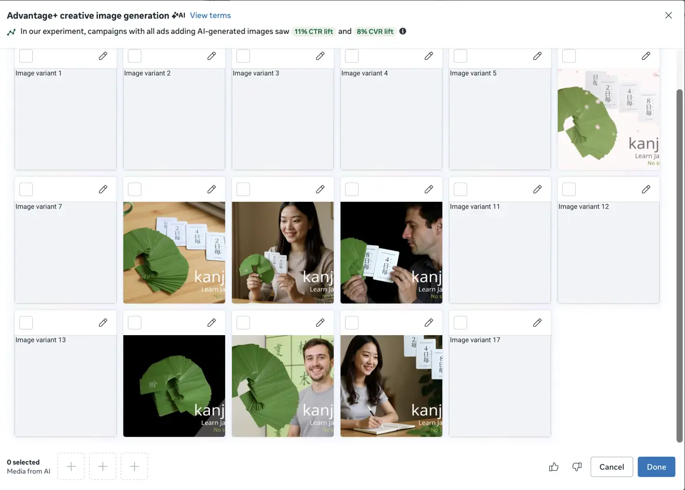
The worst part is that Meta has, in my experience, the best results by far out of the alternatives. All my attempts with Google, TikTok, and Reddit were an even bigger waste of money. For instance, today I tried running an Ad on Reddit again: it was easy to setup, but it blew past my $50 budget in an hour and went on to consume $78 for a total of 47 link clicks and 0 purchases.
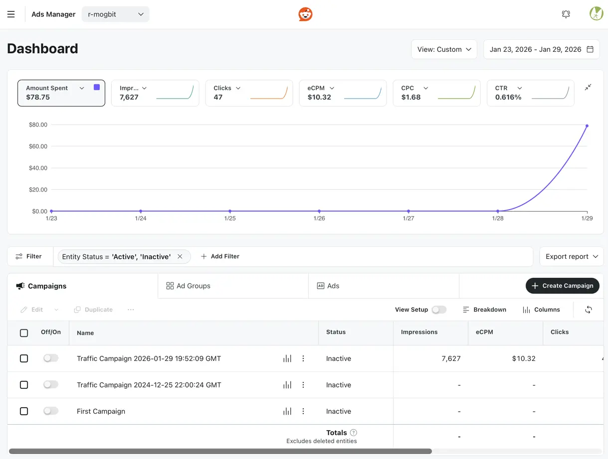
Spending money on ads really makes me wonder what my goal is. At least something became clear to me: regardless of the goal, this is not how I want to achieve it.
7 Burn-out (March 2025)
Marketing the project became wearisome. In between struggling to build momentum for the project, creating more media content of the cards, preparing the Kickstarter page, the money spent on ads, and the looming task of filming and editing the project video for Kickstarter, I slowly started losing interest in the project and being fatigued from making any decision about it. I missed the launch deadline I set for myself, with no video anywhere near completed.
Add to this the instability in trade caused by the Trump tariffs, considering my manufacturer was in China, I felt even less motivated to continue working on the project. On April 9th, I posted to Instagram saying Kanjideck was suspended indefinitely.
| Fig 18. Received the final prototypes | Fig 19. Announced suspension few days later |
|---|---|
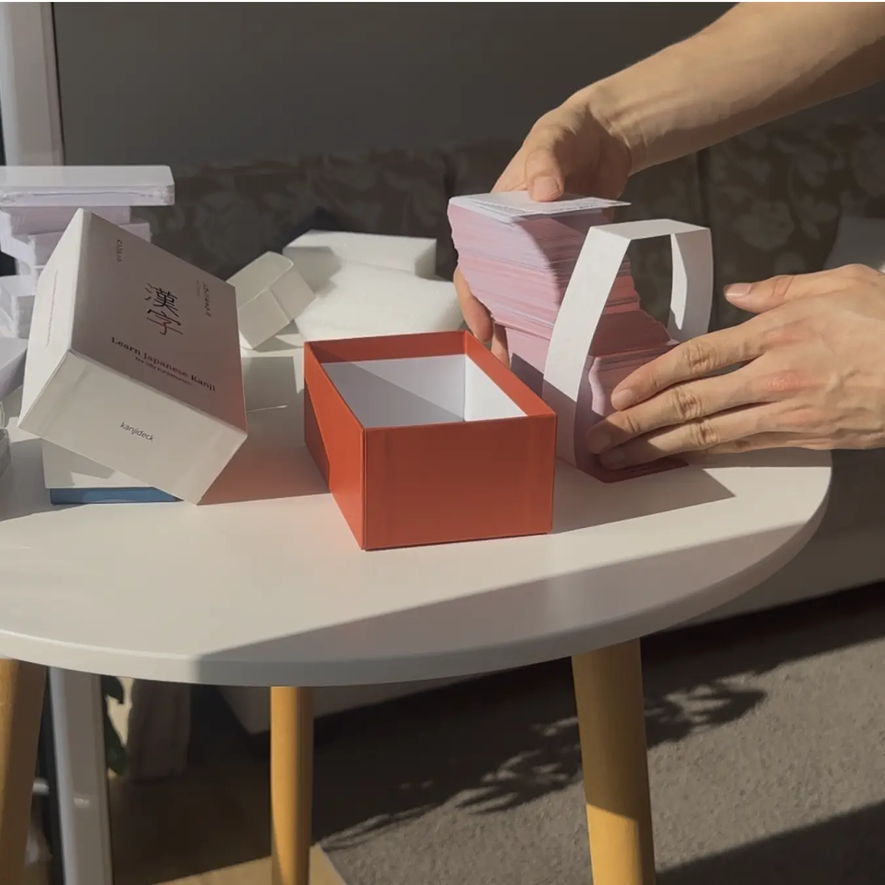 |
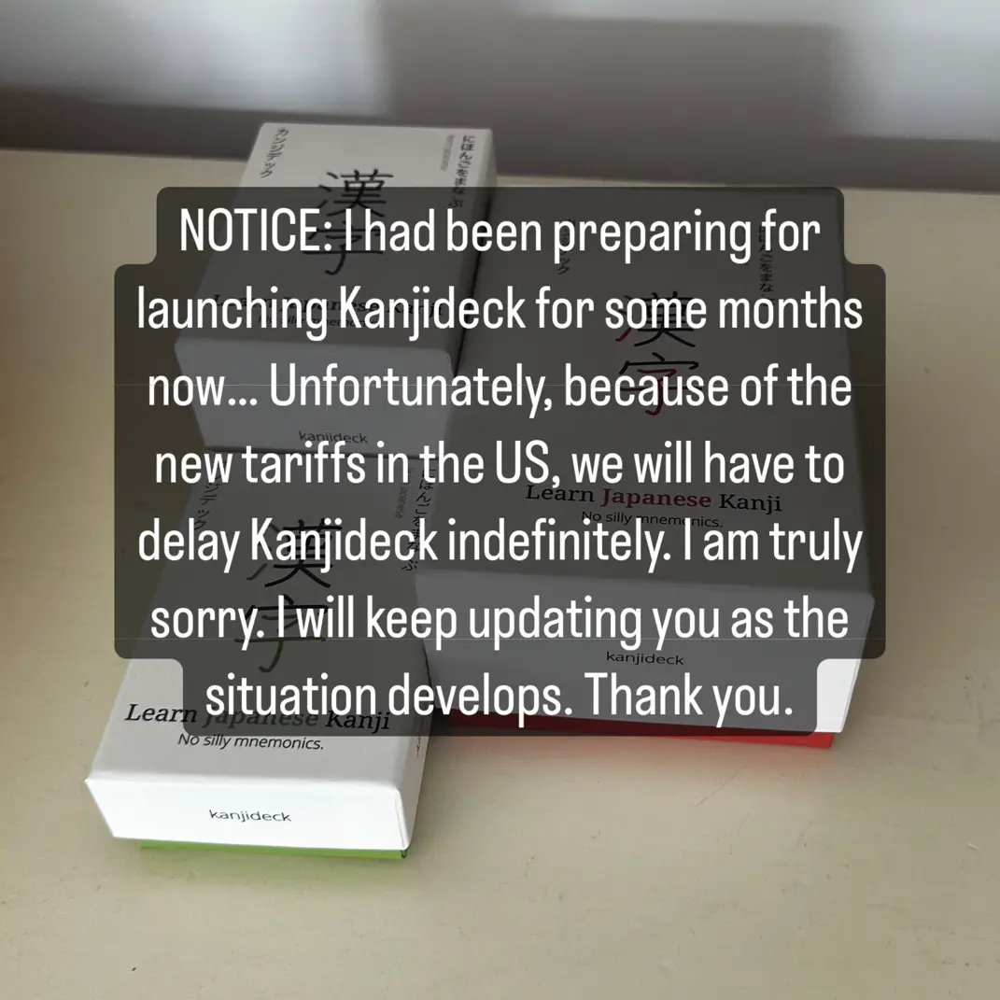 |
8 Reaching out for help (October 2025)
I think I eventually came to the realization that I couldn’t, nor needed, to do all of this alone.
My sister’s an excellent artist. Here’s a recent painting of hers:
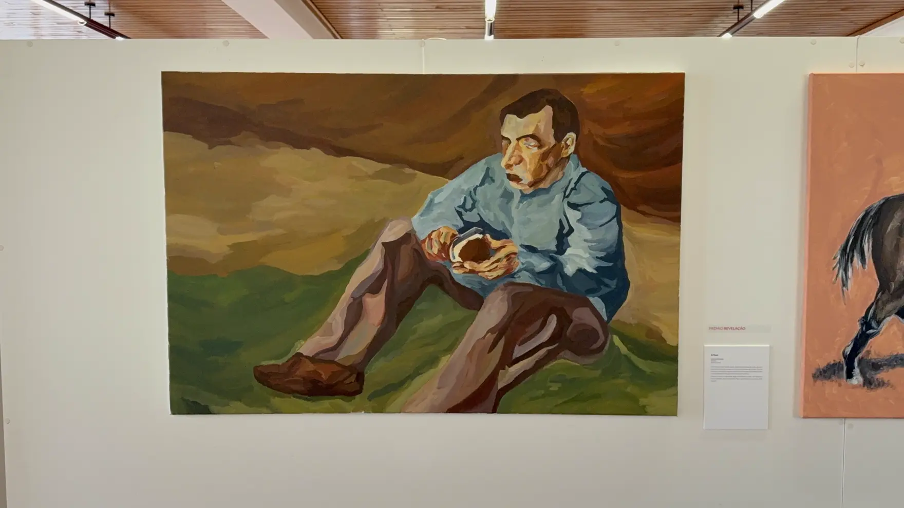
I floated the idea of having her film and edit the video for the Kickstarter at some point and she was happy to help me. Moreover, she would handle all of the social media content and management. That took a huge burden off of my hands, and I was suddenly free to tackle the parts of the project I was enthusiastic about (like finishing the explanations of how to study with Kanjideck, finalizing the prices, and actually launching!).
After some iterations of filming me, the cards, and a lot of time editing, in December 2025 we had a fantastic Kickstarter video for Kanjideck:
Also then, my partner started taking care of making Ad creatives (all of which were significantly better looking than mine). And my mom wrote a few draft e-mails in preparation for the launch!
(Seriously, I wouldn’t have been able to ever launch were it not for all your help!)
9 Launching on Kickstarter (January 2026)
Kanjideck launched on Kickstarter on the 27th of January.
A few days prior to the launch, I sent two e-mails announcing the date and time at which the project would be live. Backing early would ensure an early bird discount and help the project gain momentum. The funding goal is $55,000.
On launch day at 13:00 GMT+0 we sent e-mails to everyone subscribed, posted on social media, and opened the Kickstarter!
In the first hour we received about $1,500 in pledges and until the end of the first day we had raised about $5,000 in total. On the second we raised about $2,500, and on the third $1,100. That’s still far from the all-or-nothing goal! It’s certainly not clear, but I still believe it might be possible to reach the funding goal before the campaign ends (on February 26).
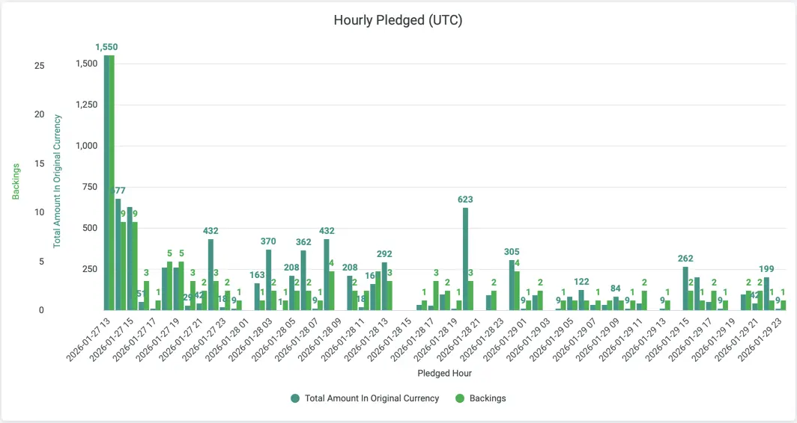
As I’m writing this post, the Kickstarter page displays $8,808 raised from 136 backers:
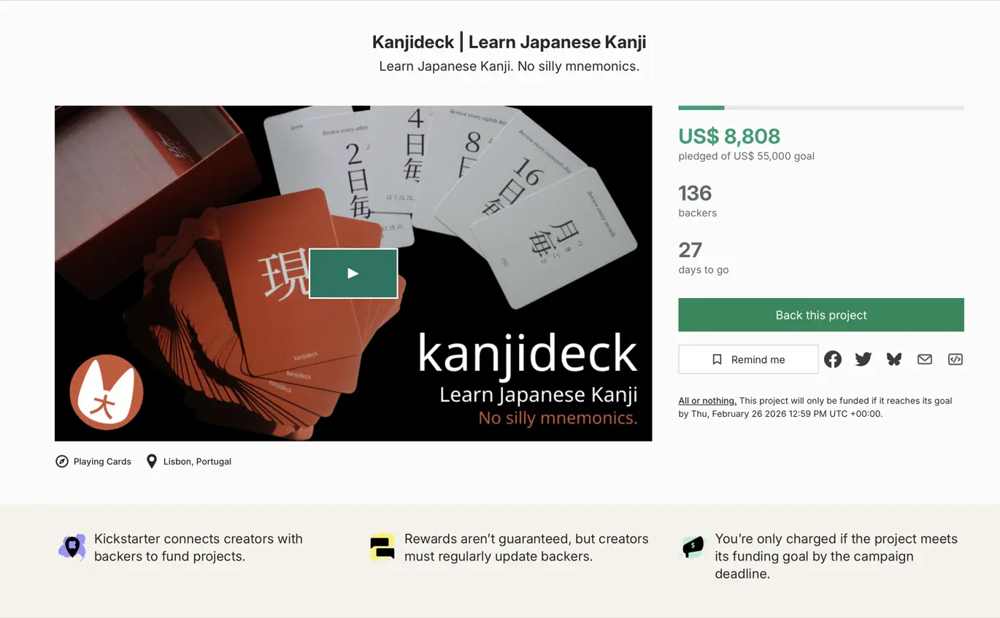
There’s of course more to do until the campaign is over, and especially more to do afterwards if the campaign is successful. But I’ll leave that for a follow up post.
In the meantime, I’ll continue studying. I’m at 1130 Kanji learned over 434 consecutive days, but there’s still about a thousand more to go!
9.1 Murphy’s Law
To go over a few of the things that did go wrong near the launch:
Right when I sent the first round of e-mails ever to my subscribers, Google was having an incident where a bug caused misclassification of most e-mails as spam
Remember when I said that hosting my own mail server had gone wrong? When I sent the second round of e-mails, on the day before the launch, to my 1400 subscribers, I immediately received some 300 “undelivered mail” notifications justified by Microsoft having blocklisted my mail server’s IP.
I hastily migrated my mailing list to SendGrid to make sure I would have proper deliverability on the launch day.
On the day I launched, Kickstarter had an outage and was down for about an hour
That sounds amusingly unlucky, but on the other hand it might just be that, when it was my product on the line, I noticed all the internet issues that I wouldn’t typically care about.
10 Conclusion
It was worth it.
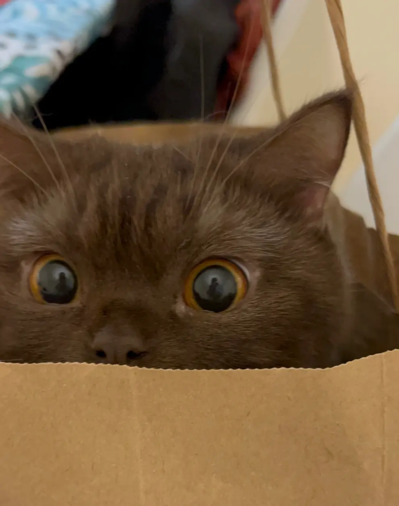
Listed by the Japanese Ministry of Education as Jōyō kanji↩︎
There are more design questions: whether or not to use Rōmaji, what readings to include, what examples, how to display the character, and the aesthetics of the design themselves are important↩︎
From here on I started daily driving this Anki deck and doing some tweaks to the displayed information and to how it was laid out. A few weeks in it had reached a fixpoint. I’m still using it today, every day!↩︎
Physical books and studying with a notebook is still my preference, even though in the long run Anki is unbeatable at managing the large amount of cards to review. I still use Anki daily.↩︎
Open-source is a big part of my life (including my day job), and even though for now Kanjideck is available only in the Kickstarter page, I intend to make the source for building the digital version available as soon as I can clean it up.↩︎
In this picture you may also find some scribbles that refer to a board game I tried to design using the Kanjideck cards exclusively! Nothing came out of it (yet?).↩︎
Here you may also notice a typo in the boxes, using ぉ rather than を↩︎
I do remember cycling in a hurry to catch the last slot for making a new Passport (a requirement for opening a US company).↩︎
If you haven’t played it, I heartily recommend it↩︎
it “isn’t even remotely fair”↩︎
loeb x = xs where xs = fmap ($xs) x, see the fantastic Dan Piponi’s From Löb’s Theorem to Spreadsheet Evaluation↩︎An alternative here, that would result in less approximations, would be to charge VAT and shipping per customer after the Kickstarter campaign is finished. I opted for charging everything upfront as I don’t think it’s always clear to many customers that there will be (sometimes considerably large) additional charges after the campaign ends otherwise.↩︎
Listmonk has some limitations I had to work around to get better e-mail scores. Namely, being able to configure the e-mail sent for the subscription confirmation request.↩︎
For example, if you don’t restrict the countries to which ads are shown, your entire budget can be blown in one go and your website gets a 99% bounce-rate giant wave of visitors with zero conversions↩︎